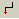
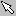
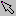
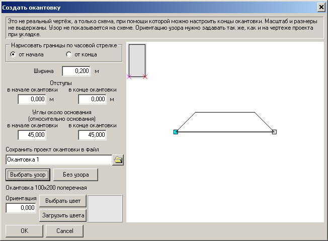
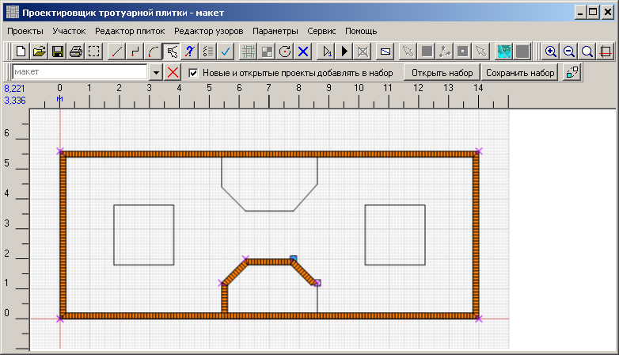
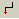
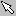
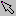

Проектировщик тротуарной плитки 2.2
Создание окантовок
Окантовка проходит по границам проекта. Обычно по границам укладывается бордюр, но там можно
разместить и декоративные элементы. Позже мы рассмотрим бордюр как частный случай окантовки.
Но пока займёмся окантовкой. Окантовку нужно создавать для каждой линии контура проекта. Каждый фрагмент окантовки - это отдельный проект, который при создании добавляется в набор проектов. Поэтому перед созданием окантовки нужно поставить отметку "Новые и открытые проекты добавлять в набор". Выбираем на тулбаре инструмент "Отметить границу участка" .
.
Сначала нарисуем окантовку внешнего контура проекта. В рамках объяснения создания окантовок будем называть его основным проектом.
Нажимаем правую кнопку мышки на нижней границе контура. Граница станет выделенной, и для неё, как и для каждого выделенного графического элемента, откроется popup-меню.
Выбираем "Создать окантовку". Откроется окно создания окантовки.
Прежде всего, мы видим схематическое изображение той границы основного проекта, для которой рисуем окантовку. На схеме длина границы и ширина окантовки показаны не в настоящем размере. Схема нужна только для того, чтобы показать расположение окантовки и форму её концов. Единственный реальный параметр - угол наклона. Он такой же, как и на чертеже. Это сделано чтобы облегчить ориентацию узора. Начало линии обозначено голубым квадратиком, конец - белым.
Немного теории. Мы уже говорили о том, что окантовка - это всего лишь ещё один проект. Следовательно, у него есть свои границы. Границы окантовки - это четырёхугольник, одна из сторон которого опирается на выделенную границу основного проекта. Границы окантовки всегда рисуются по часовой стрелке или от начала выбранной границы основного проекта, или от конца. Перейдём к практике. Введём ширину окантовки. В этом примере она 200 мм. Но размеры в этом окне используются в тех же единицах, что и на основном проекте. Поэтому в поле "Ширина" вводим "0,2".
В соответствии с установками, граница окантовки нарисовалась по часовой стрелке от начала выделенной границы основного проекта. Если указать рисовать от конца, то окантовка нарисуется в другую сторону:
Но нам это не нужно, возвращаем в первоначальное состояние.
Отступы рассмотрим позже.
Сейчас займёмся углами. При помощи них можно сделать различные виды cопряжения фрагментов окантовки. Введём "45" в оба поля.
Обратите внимание, что углы отмеряются не так, как везде в программе.
Давайте поэкспериментируем с углами для пояснения вышеизложенного. Введём "-30" в поле "в начале окантовки" и "120" в поле "в конце окантовки".
Как видим, в конце окантовки угол 120 отложился от основания. Что происходит в начале окантовки, там где угол отрицательный, -30 ? Там угол отложился от продолжения основания.
Продолжаем создавать окантовку. Возвращаем значение "45" на обоих концах. Нажимаем ,
выбираем имя файла, куда будет сохранён проект окантовки. Назовём его "Окантовка 1".
,
выбираем имя файла, куда будет сохранён проект окантовки. Назовём его "Окантовка 1".
Далее нужно выбрать узор. Выбранный узор отображается в верхнем левом углу схемы, так же как и в редакторе проектов. Специально для этого примера был создан узор из плитки "Кирпич 100x200", который можно разместить в окантовке поперёк основания.
Заполнить окантовку узором прямо на схеме невозможно, так как на схеме не выдержаны размеры и масштаб, как это было сказано в начале этой главы. Поэтому манипулировать узором прийдётся несколько "наугад".
Для плиток узора можно сразу задать цвет. Это можно сделать и позже, когда проект окантовки будет создан и добавлен в набор проектов, но для этого его нужно будет выбрать в наборе, выделить все плитки и задать цвет. В общем, сейчас это сделать проще. Нажимаем "Выбрать цвет". Выбираем из основных цветов оранжево-коричневый.
Работе с цветами посвящена отдельная глава. Поскольку для окантовки нам не нужны дополнительные цвета, не будем сейчас рассматривать эту тему. Скажем только, что по умолчанию дополнительные цвета для окантовок загружаются из основного проекта. Если нужны другие дополнительные цвета, их можно загрузить тут же, через кнопку "Загрузить цвета".
Осталось повернуть узор, чтобы его угол наклона совпадал с углом наклона основания. Так как основание строго расположено строго горизонтально, оставляем "0" в поле "Ориентация".
Теперь у нас всё готово для создания окантовки. Нажимаем "OK". Создаётся новый проект. Программа спрашивает, нужно ли его сохранить. Сохраняем. Получаем следующий вид в окне проектов:
Здесь уже два проекта: первый - "макет", второй - "Окантовка 1". Это видно в списке проектов:
Обратите внимание, что после создания окантовки она не стала активным проектом. Активным остался "макет". Это удобно, когда нужно создавать множество окантовок. Продолжаем это делать. (Чтобы закрыть список проектов надо выбрать какой-то проект. Сейчас нам нужен "макет", выбираем его простым щелчком мышки)
У нас всё ещё выбран инструмент "Отметить границу участка". Нажимаем правую кнопку мышки на правой границе макета. Выбираем "Создать окантовку". Откроется окно создания окантовки.
Обратите внимание, все параметры, кроме имени проекта, остались от прошлой окантовки. Они нам подходят, кроме ориентации узора. Его нужно развернуть на 90°. Вводим "90" в поле "Ориентация".
Остётся назначить имя проекта для окантовки. Назовём его "Окантовка 2". Нажимаем "OK". Теперь в окне проектов две окантовки.
Создаём окантовку для верхней границы. Опять нужно изменить только ориентацию узора. Она должна быть 180°. Название проекта - "Окантовка 3".
Создадим окантовку для четвёртой границы. Ориентация должна быть 270° (или -90°, что одно и то же).
Теперь начнём создавать окантовки вокруг газонов. Начнём с нижнего. Тут сложнее. Часть границы газона перекрыта окантовкой. На рисунке ниже эта граница отмечена красным.
Выделяем эту линию, вызываем окно создания окантовки. Так оно выглядит после предыдущей окантовки.
Для начала, нужно "развернуть" окантовку внутрь газона. Для этого переставляем переключатель "Нарисовать границы по часовой стрелке" в положение "от конца".
Далее. Нижний срез окантовки - прямой. Поэтому устанавливаем угол в конце в 90°. Обратите внимание, мы нарисовали окантовку от конца выделенной границы основного проекта. Поэтому начало выделенной границы (синий квадратик) и начало окантовки не совпадают. Поэтому мы ввели "90" в конце.
Границы газона сопрягаются под углом 135 градусов. Поэтому угол возле основания окантовки должен быть 135 ⁄ 2 = 67,5°. Учитывая сказанное выше про начало рисования окантовки, "67,5" нужно ввести в поле "в начале окантовки".
Теперь надо "отступить" снизу, чтобы окантовка газона и окантовка внешней границы не перекрывались. Для этого нам понадобятся отступы. Ширина ранее созданной окантовки - 200 мм. На эту же величину нужно сделать отступ. Или, учитывая размерность, на 0,2 метра. Это нужно ввести в поле отступов "в конце окантовки".
Ориентация узора должна быть 270. Это значение осталось с прошлого раза. Оставляем как есть.
Выбираем имя файла для проекта. Пусть будет "Нижняя окантовка 1". Нажимаем "OK".
Продолжаем создавать окантовки по часовой стрелке. Для следующей окантовки углы около оснований 67,5°, без отступов, и ориентация узора -135°.

Следующая окантовка. Углы около оснований 67,5°, без отступов, ориентация узора 180°.
Следующая окантовка. Углы около оснований 67,5°, без отступов, ориентация узора 135°.
Последняя окантовка нижнего газона. По аналогии с первой, понадобится отступ и разные углы возле снования в начале и в конце.
Перейдём к верхнему газону. Там мы будем делать более сложные сопряжения окантовок. Понадобится немного геометрии. Начнём с левой границы.
Вот так должны выглядеть параметры окантовки, если бы мы не собрались делать сложные сопряжения. Вспомним геометрию.
В нашем случае w - это ширина окантовки, угол A равен 45°. Значит отступ L = 0,2 ⁄ cos 45° = 0,283 (с округлением до трёх знаков). Введём это значение в поле отступа "в конце окантовки". Ориентация должна быть 270°.
Переходим к следующей границе. Отступ в конце окантовки должен быть сделан по той же логике, что и на предыдущем шаге.
Следующая окантовка симметрична и без отступов на концах.
Следующая окантовка похожа на вторую.

Последний элемент окантовки похож на первый.
Теперь перейдём к окантовкам двух квадратов. Здесь не будем сопрягать углы. На углах разместим четыре половинки, сложенные в квадрат. Выделим нижнюю границу левого квадрата.
Поскольку на углах будет другая кладка, введём отступы по 200мм в начале и в конце. Углы на концах должны быть 90°.
Далее выберем левую границу того же квадрата.
Далее нужно нарисовать угол. Это будет отдельный проект, всего 200x200 мм и четырьмя плитками. Чтобы его нарисовать, не нужно вычислять координаты. Можно обрисовать его по макету и границам окантовок. Увеличим масштаб, чтобы точно попадать мышкой в опорные точки. На рисунке ниже опорные точки показаны красным.
Создаём новый проект (кнопка ). Обратите внимание, в списке проектов активным стал проект "Безымянный". Выбираем инструмент "Ломаная линия" , и рисуем квадрат по опорным точкам. Сохраняем проект под именем "Угол окантовки". Специально для такого угла разработан узор из квадратных плиток 100x100мм. По рисунку ниже видно, как он составлен. Заполним угол этим узором.
Поскольку проект по умолчанию заполняется плитками серого цвета, надо изменить цвет плиток. Подробнее об изменении цвета будет рассказано позже. Полностью этот вопрос описан в справочном руководстве. Выбираем инструмент "Выделить плитку"  и выделяем все четыре плитки. Вызываем диалог выбора цвета и выбираем тот же цвет для окантовки.
Сбрасываем выделение (инструмент ). Теперь угол окантовки такой же, как и вся окантовка.
Уменьшаем масштаб так, чтобы видеть весь квадрат.
Если присмотреться, то видно, что окантовка верхней границы повторяет окантовку нижней, а окантовка левой границы - окантовку правой. И все четыре угла одинаковы. И они все вместе такие же, как и окантовки другого квадрата. Есть ли другой путь, кроме как рисовать остальные окантовки? Есть - клонирование.
Но пока займёмся окантовкой. Окантовку нужно создавать для каждой линии контура проекта. Каждый фрагмент окантовки - это отдельный проект, который при создании добавляется в набор проектов. Поэтому перед созданием окантовки нужно поставить отметку "Новые и открытые проекты добавлять в набор". Выбираем на тулбаре инструмент "Отметить границу участка"
.Сначала нарисуем окантовку внешнего контура проекта. В рамках объяснения создания окантовок будем называть его основным проектом.
Нажимаем правую кнопку мышки на нижней границе контура. Граница станет выделенной, и для неё, как и для каждого выделенного графического элемента, откроется popup-меню.
Выбираем "Создать окантовку". Откроется окно создания окантовки.
Прежде всего, мы видим схематическое изображение той границы основного проекта, для которой рисуем окантовку. На схеме длина границы и ширина окантовки показаны не в настоящем размере. Схема нужна только для того, чтобы показать расположение окантовки и форму её концов. Единственный реальный параметр - угол наклона. Он такой же, как и на чертеже. Это сделано чтобы облегчить ориентацию узора. Начало линии обозначено голубым квадратиком, конец - белым.
Немного теории. Мы уже говорили о том, что окантовка - это всего лишь ещё один проект. Следовательно, у него есть свои границы. Границы окантовки - это четырёхугольник, одна из сторон которого опирается на выделенную границу основного проекта. Границы окантовки всегда рисуются по часовой стрелке или от начала выбранной границы основного проекта, или от конца. Перейдём к практике. Введём ширину окантовки. В этом примере она 200 мм. Но размеры в этом окне используются в тех же единицах, что и на основном проекте. Поэтому в поле "Ширина" вводим "0,2".
В соответствии с установками, граница окантовки нарисовалась по часовой стрелке от начала выделенной границы основного проекта. Если указать рисовать от конца, то окантовка нарисуется в другую сторону:
Но нам это не нужно, возвращаем в первоначальное состояние.
Отступы рассмотрим позже.
Сейчас займёмся углами. При помощи них можно сделать различные виды cопряжения фрагментов окантовки. Введём "45" в оба поля.
Обратите внимание, что углы отмеряются не так, как везде в программе.
| В программе величина угла всегда отсчитывается от горизонтальной оси, направленной вправо. Таким образом, размер угла всегда возрастает против часовой стрелки. | В окантовке угол просто показывает угол между основанием и торцем окантовки. Направление угла не имеет значения. | |
Давайте поэкспериментируем с углами для пояснения вышеизложенного. Введём "-30" в поле "в начале окантовки" и "120" в поле "в конце окантовки".
Как видим, в конце окантовки угол 120 отложился от основания. Что происходит в начале окантовки, там где угол отрицательный, -30 ? Там угол отложился от продолжения основания.
Продолжаем создавать окантовку. Возвращаем значение "45" на обоих концах. Нажимаем
,
выбираем имя файла, куда будет сохранён проект окантовки. Назовём его "Окантовка 1".Далее нужно выбрать узор. Выбранный узор отображается в верхнем левом углу схемы, так же как и в редакторе проектов. Специально для этого примера был создан узор из плитки "Кирпич 100x200", который можно разместить в окантовке поперёк основания.

Заполнить окантовку узором прямо на схеме невозможно, так как на схеме не выдержаны размеры и масштаб, как это было сказано в начале этой главы. Поэтому манипулировать узором прийдётся несколько "наугад".
Для плиток узора можно сразу задать цвет. Это можно сделать и позже, когда проект окантовки будет создан и добавлен в набор проектов, но для этого его нужно будет выбрать в наборе, выделить все плитки и задать цвет. В общем, сейчас это сделать проще. Нажимаем "Выбрать цвет". Выбираем из основных цветов оранжево-коричневый.
Работе с цветами посвящена отдельная глава. Поскольку для окантовки нам не нужны дополнительные цвета, не будем сейчас рассматривать эту тему. Скажем только, что по умолчанию дополнительные цвета для окантовок загружаются из основного проекта. Если нужны другие дополнительные цвета, их можно загрузить тут же, через кнопку "Загрузить цвета".
Осталось повернуть узор, чтобы его угол наклона совпадал с углом наклона основания. Так как основание строго расположено строго горизонтально, оставляем "0" в поле "Ориентация".
Теперь у нас всё готово для создания окантовки. Нажимаем "OK". Создаётся новый проект. Программа спрашивает, нужно ли его сохранить. Сохраняем. Получаем следующий вид в окне проектов:
Здесь уже два проекта: первый - "макет", второй - "Окантовка 1". Это видно в списке проектов:
Обратите внимание, что после создания окантовки она не стала активным проектом. Активным остался "макет". Это удобно, когда нужно создавать множество окантовок. Продолжаем это делать. (Чтобы закрыть список проектов надо выбрать какой-то проект. Сейчас нам нужен "макет", выбираем его простым щелчком мышки)
У нас всё ещё выбран инструмент "Отметить границу участка". Нажимаем правую кнопку мышки на правой границе макета. Выбираем "Создать окантовку". Откроется окно создания окантовки.
Обратите внимание, все параметры, кроме имени проекта, остались от прошлой окантовки. Они нам подходят, кроме ориентации узора. Его нужно развернуть на 90°. Вводим "90" в поле "Ориентация".
Остётся назначить имя проекта для окантовки. Назовём его "Окантовка 2". Нажимаем "OK". Теперь в окне проектов две окантовки.
Создаём окантовку для верхней границы. Опять нужно изменить только ориентацию узора. Она должна быть 180°. Название проекта - "Окантовка 3".
Создадим окантовку для четвёртой границы. Ориентация должна быть 270° (или -90°, что одно и то же).
Теперь начнём создавать окантовки вокруг газонов. Начнём с нижнего. Тут сложнее. Часть границы газона перекрыта окантовкой. На рисунке ниже эта граница отмечена красным.
Выделяем эту линию, вызываем окно создания окантовки. Так оно выглядит после предыдущей окантовки.
Для начала, нужно "развернуть" окантовку внутрь газона. Для этого переставляем переключатель "Нарисовать границы по часовой стрелке" в положение "от конца".
Далее. Нижний срез окантовки - прямой. Поэтому устанавливаем угол в конце в 90°. Обратите внимание, мы нарисовали окантовку от конца выделенной границы основного проекта. Поэтому начало выделенной границы (синий квадратик) и начало окантовки не совпадают. Поэтому мы ввели "90" в конце.
Границы газона сопрягаются под углом 135 градусов. Поэтому угол возле основания окантовки должен быть 135 ⁄ 2 = 67,5°. Учитывая сказанное выше про начало рисования окантовки, "67,5" нужно ввести в поле "в начале окантовки".
Теперь надо "отступить" снизу, чтобы окантовка газона и окантовка внешней границы не перекрывались. Для этого нам понадобятся отступы. Ширина ранее созданной окантовки - 200 мм. На эту же величину нужно сделать отступ. Или, учитывая размерность, на 0,2 метра. Это нужно ввести в поле отступов "в конце окантовки".
Ориентация узора должна быть 270. Это значение осталось с прошлого раза. Оставляем как есть.
Выбираем имя файла для проекта. Пусть будет "Нижняя окантовка 1". Нажимаем "OK".
Продолжаем создавать окантовки по часовой стрелке. Для следующей окантовки углы около оснований 67,5°, без отступов, и ориентация узора -135°.
Следующая окантовка. Углы около оснований 67,5°, без отступов, ориентация узора 180°.
Следующая окантовка. Углы около оснований 67,5°, без отступов, ориентация узора 135°.

Последняя окантовка нижнего газона. По аналогии с первой, понадобится отступ и разные углы возле снования в начале и в конце.
Перейдём к верхнему газону. Там мы будем делать более сложные сопряжения окантовок. Понадобится немного геометрии. Начнём с левой границы.
Вот так должны выглядеть параметры окантовки, если бы мы не собрались делать сложные сопряжения. Вспомним геометрию.
cos A = w ⁄ L ⇒ L = w ⁄ cos A
В нашем случае w - это ширина окантовки, угол A равен 45°. Значит отступ L = 0,2 ⁄ cos 45° = 0,283 (с округлением до трёх знаков). Введём это значение в поле отступа "в конце окантовки". Ориентация должна быть 270°.
Переходим к следующей границе. Отступ в конце окантовки должен быть сделан по той же логике, что и на предыдущем шаге.
Следующая окантовка симметрична и без отступов на концах.
Следующая окантовка похожа на вторую.
Последний элемент окантовки похож на первый.
Теперь перейдём к окантовкам двух квадратов. Здесь не будем сопрягать углы. На углах разместим четыре половинки, сложенные в квадрат. Выделим нижнюю границу левого квадрата.
Поскольку на углах будет другая кладка, введём отступы по 200мм в начале и в конце. Углы на концах должны быть 90°.
Далее выберем левую границу того же квадрата.
Далее нужно нарисовать угол. Это будет отдельный проект, всего 200x200 мм и четырьмя плитками. Чтобы его нарисовать, не нужно вычислять координаты. Можно обрисовать его по макету и границам окантовок. Увеличим масштаб, чтобы точно попадать мышкой в опорные точки. На рисунке ниже опорные точки показаны красным.
Создаём новый проект (кнопка ). Обратите внимание, в списке проектов активным стал проект "Безымянный". Выбираем инструмент "Ломаная линия" , и рисуем квадрат по опорным точкам. Сохраняем проект под именем "Угол окантовки". Специально для такого угла разработан узор из квадратных плиток 100x100мм. По рисунку ниже видно, как он составлен. Заполним угол этим узором.
Поскольку проект по умолчанию заполняется плитками серого цвета, надо изменить цвет плиток. Подробнее об изменении цвета будет рассказано позже. Полностью этот вопрос описан в справочном руководстве. Выбираем инструмент "Выделить плитку"  и выделяем все четыре плитки. Вызываем диалог выбора цвета и выбираем тот же цвет для окантовки.
Сбрасываем выделение (инструмент ). Теперь угол окантовки такой же, как и вся окантовка.
Уменьшаем масштаб так, чтобы видеть весь квадрат.
Если присмотреться, то видно, что окантовка верхней границы повторяет окантовку нижней, а окантовка левой границы - окантовку правой. И все четыре угла одинаковы. И они все вместе такие же, как и окантовки другого квадрата. Есть ли другой путь, кроме как рисовать остальные окантовки? Есть - клонирование.